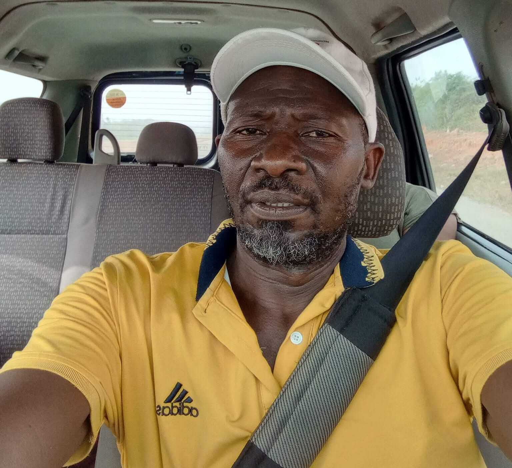

Wrandy Bamba
Président Fondateur
Visionnaire du retour à la terre, expert en gestion de projets agricoles
Une aventure collective pour la souveraineté alimentaire
Création officielle de la SCOOPS Alliance Tounga AgroCoop à Touba par Wrandy Bamba et 5 membres fondateurs. Vision : fédérer les producteurs du Bafing pour une agriculture moderne et durable.
Acquisition du tracteur Massey Ferguson 3080 et mise en place des premières parcelles de riziculture irriguée sur 20 hectares.
Inauguration du siège social et premières récoltes. Lancement de la filière pisciculture avec 4 bacs hors-sol expérimentaux.
Conseil d'Administration élu pour 3 ans (mandat 2025-2028)
Président Fondateur
Visionnaire du retour à la terre, expert en gestion de projets agricoles
Secrétaire Général
Coordination des opérations et relations institutionnelles

Trésorier
Gestion financière et suivi des cotisations
Siège social : Touba, Sous-préfecture de Koro, Région du Bafing
BP 35 Abidjan 01